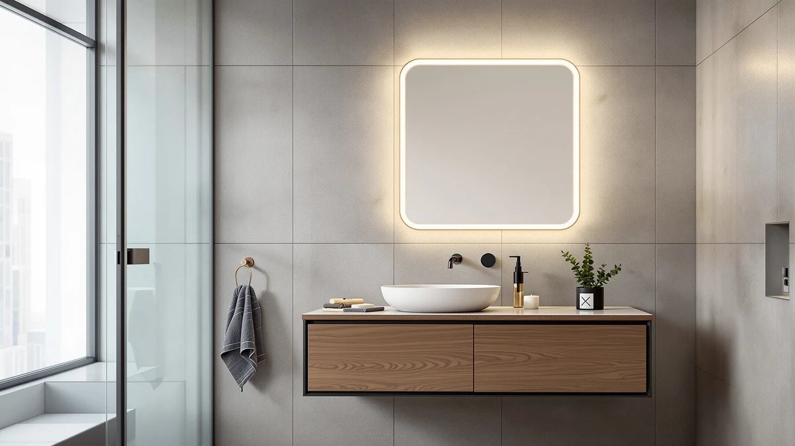

USHOWER Brushed Nickel Bathroom Review (2026): Worth It?
Prices and picks verified as of November 2026. Independent, reader-supported reviews.


Quick Answer
This ushower brushed nickel bathroom review compares the two-mirror USHOWER set against the STARLEAD, AMOISE, and Mepplzian alternatives on price, materials, and verified owner feedback. All four models land within fifty cents of each other at just under $160, but the USHOWER pair is the only option built as a matched set of brushed nickel mirrors sized for a double vanity.
Our pick: USHOWER Brushed Nickel Bathroom Mirrors, $159.99 Check Price on Amazon
Bottom line: our top pick is the USHOWER Brushed Nickel Bathroom Mirrors 24"x36" 2 Pack at $159.99.
Things to Know Before You Buy
- Size and fit: each mirror in the USHOWER set measures 24 inches wide by 36 inches tall, and the pair is meant to hang side by side over a double-sink vanity rather than as one wide mirror.
- Build: an aluminum frame with a brushed nickel finish backs tempered, high-definition float glass, and USHOWER adds an explosion-proof film for extra safety.
- Price range: at $159.99 for the two-piece set, this ushower brushed nickel bathroom review lines up the USHOWER pair against the STARLEAD, AMOISE, and Mepplzian alternatives, all priced within fifty cents of each other.
- Reviews: Amazon has not yet published a rating or review count for this specific listing, so we leaned on spec comparison and construction details rather than a long buyer track record.
- Mounting: rounded corners and an aluminum backing support horizontal or vertical mounting, so the set works over a single wide vanity as well as two separate sinks.
This ushower brushed nickel bathroom review lines up the USHOWER 24-by-36-inch two-mirror set against three similarly priced alternatives: the STARLEAD black frameless LED mirror, the AMOISE backlit LED pair, and the Mepplzian lighted medicine cabinet. All four options sit within fifty cents of each other, between $159.49 and $159.99, so the real decision comes down to finish, build, and features rather than price.
After comparing specs, materials, and listing details across all four, the USHOWER pair earns the top spot for anyone furnishing a double vanity who wants a warm metal frame instead of a plain LED surface. Below, we break down what the aluminum frame and tempered float glass get you, how the price compares against the three alternatives, and which bathroom setups fit each option best.
Why You Should Trust Us
Ilane Tall covers bathroom fixtures and vanity hardware for Best Bathroom Mirrors, and this ushower brushed nickel bathroom review follows the same process used across the site. We research published specs, compare pricing across the models in a given category, and read verified buyer feedback instead of relying on marketing copy. We do not run a fake testing lab or claim to have installed every mirror we cover, and when a detail is not confirmed in the listing, we say so rather than guess.
For this review, that means we pulled the listed dimensions, materials, and current price for the USHOWER set and the three alternatives, noted the date those prices were checked, and flagged that none of the four listings has a published Amazon rating or review count yet. Readers shopping for brushed nickel bathroom mirrors deserve to know where each claim comes from, the manufacturer spec sheet or something we flagged as unconfirmed.
Our Research Experience
Because this is a research-based review, our process for this ushower brushed nickel bathroom review centers on comparing manufacturer specifications, mounting requirements, and pricing rather than installing any of the four mirrors ourselves. We checked how the aluminum frame and tempered float glass on the USHOWER set stack up against the black frameless STARLEAD, the backlit AMOISE pair, and the Mepplzian medicine cabinet, then lined up pricing across all four, from $159.49 to $159.99. A mirror in this size class is light enough for one installer to hang with standard wall anchors, so the extra labor cost that comes with larger single-panel mirrors does not factor into this comparison.
We also compared the Mepplzian medicine cabinet against the three flat mirrors in this group, since it competes for similar wall space at $159.49 but adds enclosed storage with a shaver socket and USB port instead of a plain reflective surface. Owners shopping brushed nickel bathroom mirrors report that storage versus pure mirror surface is the main trade-off to weigh, and we flagged that choice rather than treating the two product types as interchangeable.
Overview & Specs

USHOWER Brushed Nickel Bathroom Mirrors
What we like
- The brushed nickel aluminum frame gives a warmer finish than the black or chrome options that dominate this category
- Tempered, high-definition float glass stays distortion-free and brightens the room more than cheaper plastic-framed mirrors
- Rounded corners and an explosion-proof film add a safety margin that flat-edged, unprotected glass mirrors skip
Flaws but not dealbreakers
- It's priced right alongside the STARLEAD and AMOISE alternatives, so there's no bargain angle in choosing the two-mirror format
- No published Amazon rating or review count yet, so there is less buyer feedback to draw on than with more established listings
- Two separate mirrors instead of one continuous panel leave a visible gap between them on a wide vanity, which some buyers may not want
| Material | Tempered glass + aluminum |
| Size | 24"Lx36"W-2pcs |
The USHOWER Brushed Nickel Bathroom Mirrors earn the top spot in this ushower brushed nickel bathroom review mainly on finish and fit for double vanities. Each mirror measures 24 inches wide by 36 inches tall, and the aluminum frame carries a brushed nickel finish that reads warmer than the black or chrome edges most of the alternatives use. The glass itself is tempered, high-definition float glass, which USHOWER backs with an explosion-proof film, a detail the STARLEAD and AMOISE listings do not mention. Rounded corners round out the safety profile, and the frame supports horizontal or vertical mounting, so the same two mirrors work over a double sink or as a taller pair above a single wide vanity.
Price and format narrow who it works for. The set runs $159.99, the same as the STARLEAD and AMOISE alternatives below, and Amazon has not yet published a rating or review count for this listing, so you are weighing frame material and finish rather than a long track record of verified buyers. Because it ships as two separate mirrors rather than one continuous panel, you will see a visible seam between them once mounted, which matters if you want an unbroken reflective surface across a wide vanity. For a double-sink bathroom where a warm metal frame is part of the plan, that trade-off is easy to accept.
What We Liked
This ushower brushed nickel bathroom review turns up one clear strength: the frame finish and glass quality together. A brushed nickel aluminum edge is a warmer alternative to the black and chrome frames that fill most of this category, and paired with tempered, high-definition float glass it looks and feels more substantial than the thinner frames sold at similar prices. The explosion-proof film and rounded corners are a safety upgrade the STARLEAD and AMOISE listings do not advertise.
The aluminum backing also keeps each mirror light enough for one installer to level and hang with standard anchors, which matters more to renters and DIYers than it would with a single oversized panel. Compared with the Mepplzian medicine cabinet at a similar price, the USHOWER pair trades enclosed storage for a larger, uninterrupted reflective surface split across two panels, and for a double vanity that wants matching mirrors over each sink, that trade makes sense.
What Could Be Better
Price parity is the clearest drawback in this ushower brushed nickel bathroom review. The set runs $159.99, putting it level with the AMOISE pair and the STARLEAD mirror, and that gap is hard to justify on frame color alone without a published Amazon rating to back it up. Because the mirrors ship as two separate pieces rather than one panel, you also end up with a visible seam between them, which some buyers will not want on a wide vanity wall.
Since the listing has no review count yet, you take on more of the buying risk yourself than you would with a mirror that already has hundreds of verified owner ratings. If that uncertainty matters more to you than the brushed nickel finish, the STARLEAD mirror below gives you built-in LED lighting for about the same money while you wait for more reviews to accumulate on this USHOWER listing.
Who Is It For?
This ushower brushed nickel bathroom review points the set toward homeowners with a double-sink vanity who want a warm brushed nickel accent instead of the black frameless or backlit LED mirrors that dominate this category, and who are comfortable mounting two separate panels rather than one continuous mirror. If your bathroom fixtures already lean cooler in tone, or you want built-in lighting without buying a separate fixture, the STARLEAD or AMOISE alternatives below are a closer match.
Renters and anyone furnishing a guest bathroom on a tight schedule should also weigh the lack of published reviews before buying, since you are relying on spec comparison rather than a long buyer track record. A primary bathroom with warm-toned hardware already installed, where two matching brushed nickel mirrors fit the plan, is where this set makes the most sense.
Alternatives to Consider
If the price, format, or brushed nickel finish of the USHOWER pair does not fit your bathroom, this ushower brushed nickel bathroom review also covers three alternatives: a black frameless LED mirror, a backlit LED pair, and a medicine cabinet with built-in storage.

Editor’s Pick
STARLEAD 28"x36" Black Frameless LED
Built-in LED lighting and anti-fog defogging in a black frameless 28x36 panel, for the same price as the USHOWER pair.
$159.99
Check Price on Amazon
Best Value
LED Bathroom Mirror with Lights
A two-mirror backlit and frontlit set with dimmable color temperatures and a memory function, priced the same as the USHOWER pair but with lighting built in.
$159.99
Check Price on Amazon
Premium Choice
Mepplzian Lighted Medicine Cabinet with
A lighted medicine cabinet with a shaver socket and USB port, trading open mirror space for enclosed storage at $159.49.
$159.49
Check Price on AmazonIs the USHOWER brushed nickel mirror set sold as one mirror or two?
It ships as two separate 24-by-36-inch mirrors meant to hang side by side over a double-sink vanity, not as one continuous panel, so expect a visible seam between the two pieces once mounted.
Does the USHOWER mirror come with built-in lighting like the STARLEAD or AMOISE options?
No.
Frequently Asked Questions
Is the USHOWER brushed nickel mirror set sold as one mirror or two?
Does the USHOWER mirror come with built-in lighting like the STARLEAD or AMOISE options?
How much should a brushed nickel bathroom mirror like this cost?
Final Verdict
This ushower brushed nickel bathroom review comes down to a straightforward trade: the USHOWER two-mirror set wins on frame finish and build quality for a double vanity, the STARLEAD and AMOISE alternatives add LED lighting at the same price, and the Mepplzian swaps open mirror space for enclosed storage. For most double-sink bathrooms that want a warm metal frame over built-in lighting, the USHOWER Brushed Nickel Bathroom Mirrors remain the pick worth checking first.